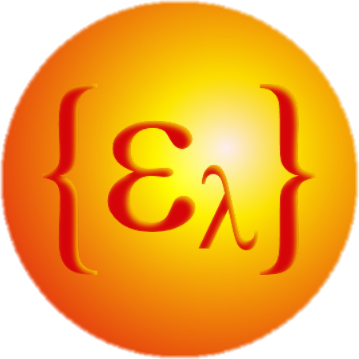

Welcome to pyradi’s documentation!¶
{kind=link}
The pyradi toolkit is a Python toolkit to perform optical and infrared computational radiometry (flux flow) calculations.
The toolkit is available athttps://pypi.python.org/pypi/pyradi/ (pip installation package)https://github.com/NelisW/pyradi (latest version in the repository)See docs atIPython notebooks demonstrating the use of pyradi is available atTested against Python 2.7.12 and Python 3.5.2
- Introduction
- Planck and thermal radiation
- File reading/writing utility
- Plotting utility
- Spherical Plotting utility
- Utility Functions
- Radiometric Lookup Functions
- Ptw File Functions
- Modtran utility
- Three-Dimensional Noise Calculation
- Colour coordinates
- Bulk detector modelling
- Staring Array Module (rystare)
- Target Radiance Image Generator (rytarggen)
- Probability tools (ryprob)
- Outdoor scene flux levels (rypflux)
- Scene model (ryscene)
- Coding Guidelines
Examples of code use¶
The respective python files all have examples of use and simple test code at the end of each of the files. Execute these python files as scripts to execute the example code, and observe the results.